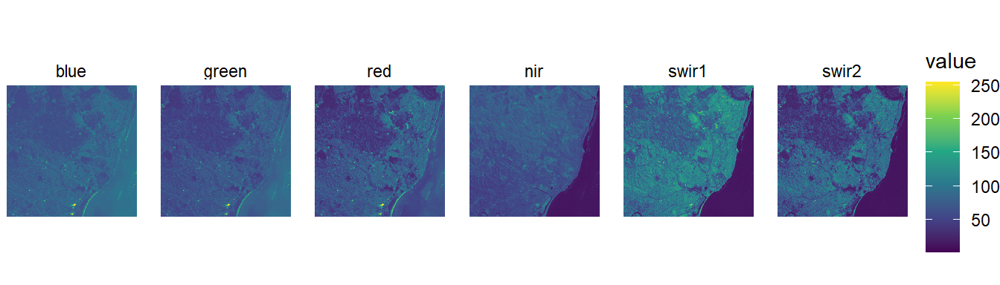
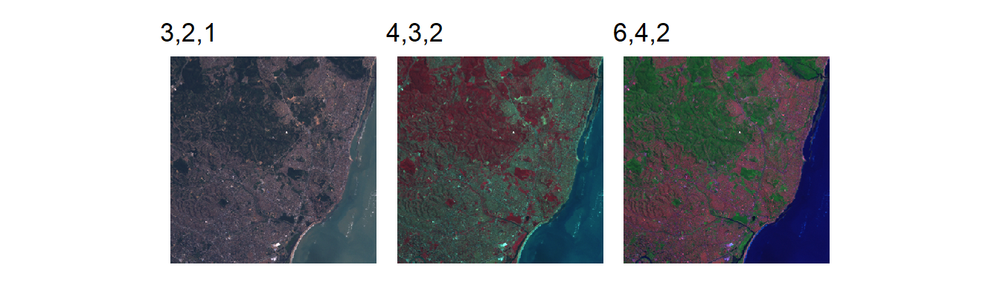
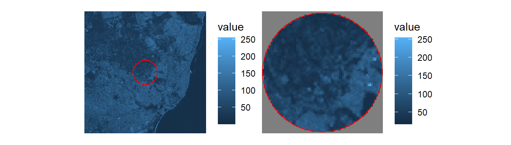
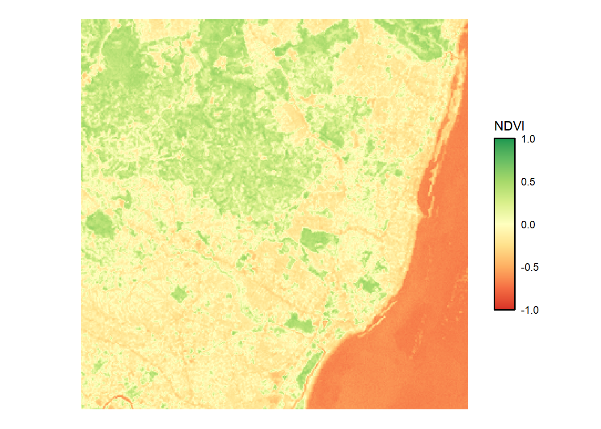
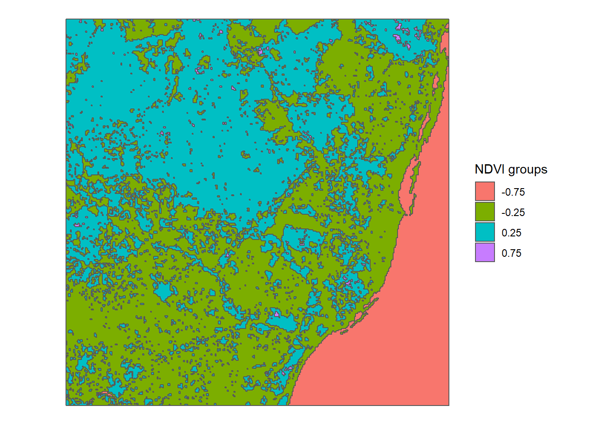

stars package
Originally posted on 2021-03-29
Last updated 2021-05-13
This page is just a few examples and reminders about common tasks using the stars package.
library(tidyverse)
library(patchwork)
library(stars)
library(sf)tif = system.file("tif/L7_ETMs.tif", package = "stars")
(x = read_stars(tif))## stars object with 3 dimensions and 1 attribute
## attribute(s):
## L7_ETMs.tif
## Min. : 1.00
## 1st Qu.: 54.00
## Median : 69.00
## Mean : 68.91
## 3rd Qu.: 86.00
## Max. :255.00
## dimension(s):
## from to offset delta refsys point values x/y
## x 1 349 288776 28.5 UTM Zone 25, Southern Hem... FALSE NULL [x]
## y 1 352 9120761 -28.5 UTM Zone 25, Southern Hem... FALSE NULL [y]
## band 1 6 NA NA NA NA NULLx <- st_set_dimensions(x, "band", c("blue","green","red","nir","swir1","swir2"))
st_get_dimension_values(x, "band")## [1] "blue" "green" "red" "nir" "swir1" "swir2"x <- x %>% setNames("value")
names(x)## [1] "value"ggplot() +
geom_stars(data = x) +
coord_equal() +
theme_void() +
scale_fill_viridis_c() +
facet_wrap(~band, ncol = 6)
ggplot() +
geom_stars(data = st_rgb(x[,,,c(3,2,1)])) +
coord_equal() +
scale_fill_identity() +
theme_void() +
labs(title = "3,2,1")|
ggplot() +
geom_stars(data = st_rgb(x[,,,c(4,3,2)])) +
coord_equal() +
scale_fill_identity() +
theme_void() +
labs(title = "4,3,2")|
ggplot() +
geom_stars(data = st_rgb(x[,,,c(6,4,2)])) +
coord_equal() +
scale_fill_identity() +
theme_void() +
labs(title = "6,4,2")
sfmy_bbox <- x %>% st_bbox() %>% st_as_sfc() %>% st_as_sf()
my_centroid <- my_bbox %>% st_centroid()
my_aoi <- my_centroid %>% st_buffer(1000)
ggplot() +
geom_stars(data = x) +
geom_sf(data = my_aoi, fill = NA, color = "red") +
theme_void()|
ggplot() +
geom_stars(data = x[my_aoi]) +
geom_sf(data = my_aoi, fill = NA, color = "red") +
theme_void()
ggplot() +
geom_stars(data = st_apply(x, c("x", "y"), max)) +
coord_equal() +
theme_void() +
scale_fill_viridis_c() calc_ndvi <- function(x) (x[4] - x[3])/(x[4] + x[3])
ndvi <- st_apply(x, c("x", "y"), FUN = calc_ndvi)
ggplot() +
geom_stars(data = ndvi) +
coord_equal() +
theme_void() +
scale_fill_gradientn(colours = RColorBrewer::brewer.pal(n = 9, name = "RdYlGn"),
limits = c(-1,1),
guide = guide_colorbar(barheight = 10,
frame.colour = "black",
frame.linewidth = 1.5,
ticks.colour = NA)) +
labs(fill = "NDVI")
stars to sfndvi$groups <- cut(ndvi$calc_ndvi, c(-Inf,-0.5,0,0.5,Inf), c(-0.75,-0.25,0.25,0.75))
ndvi_sf <- ndvi["groups"] %>% st_as_sf(merge = T)
ggplot() +
geom_sf(data = ndvi_sf, aes(fill = groups)) +
labs(fill = "NDVI groups") +
theme_void()